해협을 둘러싼 계산 (5) - 바랴그의 모험
게시: 2026-05-14T06:30:32+09:00
원래 러시아 해군 자산으로 양해가 된 줄 알았다가 갑자기 우크라이나가 자기 자산이라고 주장하는 바람에 보스포러스 해협을 통해 쿠즈네초프가 야반도주를 할 때, 미콜라예프 조선소에는 아직 70% 정도 밖에 완성되지 않은 쿠즈네초프의 자매함이 있었음. 그 항모의 원래 이름은 Varyag(바이킹이라는 뜻)로서, 쿠즈네초프보다 3년 뒤인 1988년 진수된 상태로서, 아직 자력 운항이 아예 불가능한 상태. 어찌어찌 자력 운항으로 미콜라예프 조선소를 빠져나온다고 하더라도, 당시 전체 소련에서 항모 건조의 기술과 경험을 갖춘 곳은 미콜라예프 조선소뿐이었으므로, 러시아는 나머지 30% 공정을 완료할 자신도 없었음. 따라서 러시아 해군은 이 항모는 포기.
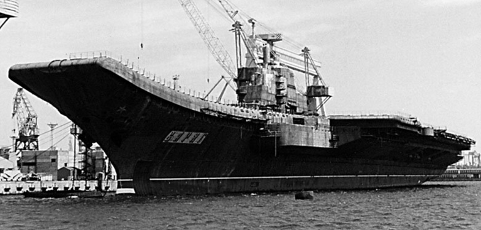
(미콜라예프에서 건조 중이던 바랴그)
한밤중에 탈출한 쿠즈네초프의 상실에 입맛을 다시던 우크라이나는 남은 바랴그를 완공시켜 취역시킬 수도 있었겠으나... 전혀 그럴 상황이 아니었음. 이제 막 소련에서 독립한 우크라이나도 모든 것이 엉망진창이었고, 바랴그를 완공할 기술은 있었는지 몰라도 돈과 의지는 물론, 항모에 대한 쓸모가 전혀 없었음. 도망친 쿠즈네초프의 경우 함재기나 무장 등을 제외하고도 건조에 대략 10억 달러 정도가 들었다고 추정되는데, 우크라이나가 바랴그를 독자적으로 완공시키려 추산을 해보니 함재기 등을 빼고 항모 자체만 완공시키는데도 5억 달러가 추가로 들어가야 할 판국. 결국 우크라이나는 쿠즈네초프 탈출 몇 개월 후에 바랴그에 대한 모든 작업을 중단시킴.
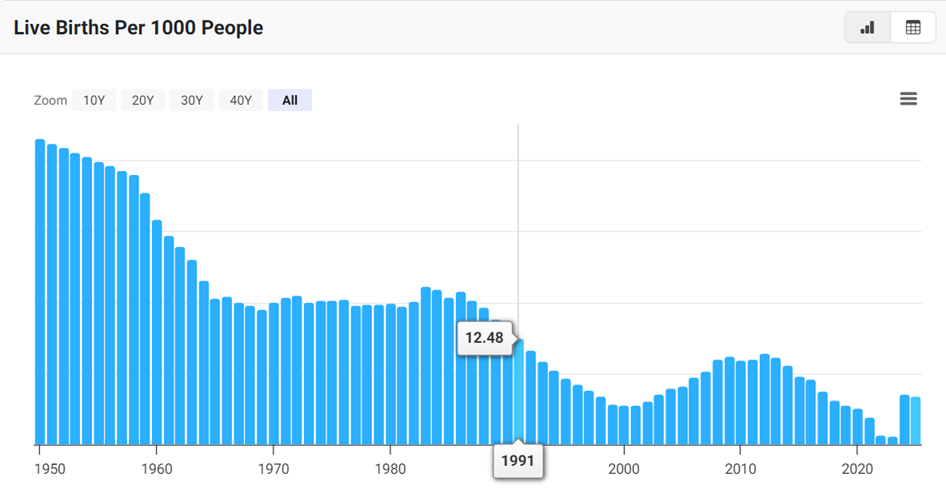
(우크라이나 전쟁이 벌어졌을 때, 많은 사람들이 놀란 이유가 우크라이나 병사들이 너무 늙었다는 것. 알고보니 우크라이나의 징집 연령이 27세 (최근 25세로 내림) 이상이었음. 이유는 1990년~2000년대 정치적 혼란과 경제 위기로 출생율이 극도로 낮아, 그 세대가 전쟁에서 죽어버리면 우크라이나의 미래도 사라지기 때문. 위 그래프는 우크라이나의 1000명당 출생률 변화 추이.) 만들다 만 항모는 어느 누구에게도 도움이 되지 않음. 항구에 계류시켜 놓는 것도 일종의 비용. 함체에 점점 녹이 슬어 고철 가격이 떨어지는 감가상각비도 있지만, 돈을 받고 다른 선박을 계류시킬 수 있는 항만 공간을 차지하기 때문. 우크라이나는 바랴그를 사갈 매수자를 부지런히 찾았는데, 관심을 보인 사람이 즉각 나타남. 중국이었음. 그러나 너무 깎으려 들었는지 거래는 성사되지 않음. 결국 그렇게 계속 소금물 위에서 썩어가던 바랴그가 마침내 팔린 것은 1998년. 어느 홍콩 사업가가 이를 해상 카지노 및 호텔로 개조하겠다며 2천만 달러에 사들임. 이건 건조에 이미 사용된 비용의 절반도 안 되는 돈이었으나 실은 그걸 해체해서 얻을 수 있는 고철 가격의 3배 정도에 해당하는 꽤 큰 돈. 그렇게 값을 후하게 쳐주는 대신 홍콩 사업가는 바랴그의 설계도도 요구. 카지노로 개조할 때 공사 기간과 비용을 줄이려면 설계도가 필요하다는 것. 실제로 우크라이나는 서류 무게만 약 40톤에 달하는 설계도면을 다 넘겨 주었음. 당연히 미국과 유럽 등에서는 저 구매가 혹시 중국이 항모 보유를 위해 가져가려는 것 아니냐고 의심했으나, 이게 전례가 없는 일은 아니었고 이미 중국은 1996년 테마 파크로 활용하겠다며 퇴역한 소련 항모 키에프를 인수.
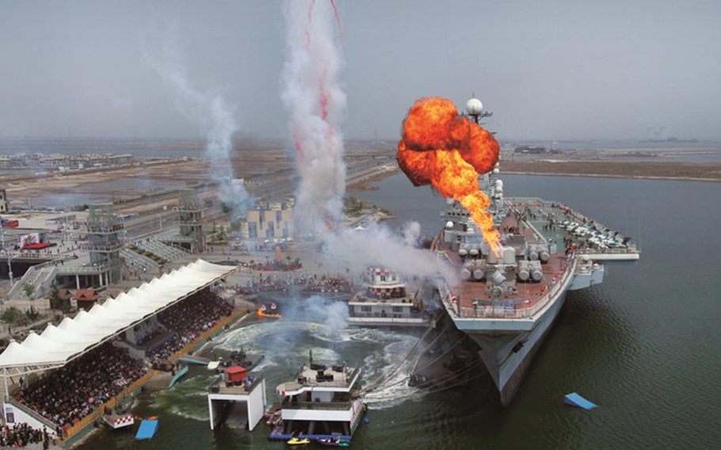 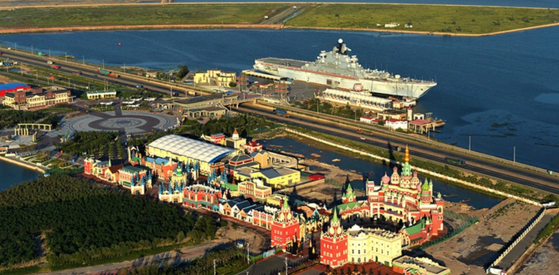
(1970년대 NATO를 긴장시켰던 키예프는 지금 산동반도 텐진에서 저렇게 항모 테마의 해상 호텔이 되어 있음. 객실수 184개, 2004년 오픈. 1박에 최저가 150달러부터라는데, 호텔스닷컴 등을 열심히 뒤져보아도 여기 예약을 할 수가 없음.)
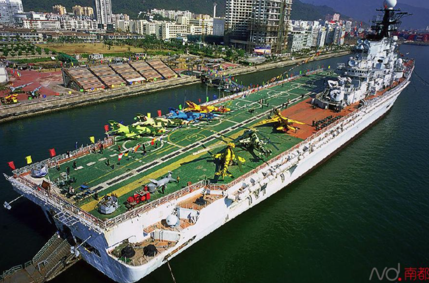
(뿐만 아니라 키예프의 자매함이던 Minsk도 중국 장쑤성 난통시에서 항모 테마 파크가 되어 있음. 2024년에는 여기서 화재가 발생하기도.) 그런데 알고보면 바랴그의 매각에는 꽤 복잡한 사정이 있었음. 중국 인민해방군 군부는 장차 대양 해군으로의 도약을 위해 항모를 도입해야 한다는 꿈을 꾸고 있었고, 그래서 바랴그를 매입한 이유는 실제로 개장한 뒤 항모로 취역시키려고 한 것. 그러나 홍콩 사업가를 통해 이를 매입한 것은 미국과 유럽 정보당국을 속이려고 한 것도 있었으나, 그보다는 중국 공산당을 속이려고 한 것이 더 컸음. 저 거래가 이루어지던 1990년대 후반은 장쩌민이 중국 주석으로 있던 시기로서, 당시 장쩌민은 도광양회(韜光養晦, 어둠 속에서 칼을 갈 때는 빛을 숨기라는 뜻)를 정책으로 세우고 있었음. 즉, 아직은 미국에게 조금이라도 의심살 일은 하지 말고 바싹 엎드려 기술과 산업을 키우고 돈을 벌어야 한다는 입장. 게다가 아직 중국은 항모 기술도 부족한고 국고도 충분치 않은데 고철 항모를 들여왔다가 완성도 못하고 국방비만 날려먹는 것 아니냐는 우려가 컸음. 그래서 그 구매 신청서에 장쩌민이 직접 불매(不買)라고 서명하며 반려했다고 전해짐. 그러나 중국 군부는 집요했음. 결국 자신들과 연관이 있던 농구선수 출신의 홍콩 사업가를 통해 바랴그를 위장매입.
(장쩌민은 나중에야 군부가 바랴그를 기어이 위장매입한 것을 알고 대노했었다고. 이는 당이 군을 장악한다는 중국 공산당의 기본 방침에 대한 도전으로 받아들여졌기 때문. 그러나 유고슬라비아 내전에서의 중국 대사관 오폭 사건(1999)과 하이난에서의 미해군 항공기와의 충돌 사건(2001) 등을 통해서 점차 미국과 언제까지 좋은 관계를 유지할 수는 없으며 결국 중국 군사력을 키워야 한다는 분위기가 조성되었음. 그럼에도 불구하고 서방의 바랴그에 대한 의심과 압박이 심했으므로 정쩌민은 주석자리에서 물러날 때까지 바랴그를 그냥 항구에 매어놓고 방치. 사진은 1995년 방한하여 청와대에서 김영삼 대통령과 만나는 장쩌민.) 이렇게 바랴그를 손에 넣은 중국 군부는 득의양양할 것 같았지만 처음부터 암초를 만남. 돈을 지불하고 바랴그를 뺴내오려 하니, 당장 튀르키예가 보스포러스 해협에 대한 통행을 불허한 것. 중국 군부를 대리하던 홍콩 사업가는 해협 통과를 자신하고 있었다가 크게 당황. 이미 쿠즈네초프가 항공순양함 핑계를 대며 1991년 해협을 빠져나갔으므로 같은 급의 자매함을 몽트뢰 협정에서 통과를 금지한 항모라는 이유로 통과 불허할 리는 없다고 생각했다가 허를 찔린 것. 튀르키예가 내세운 불가 사유는 몽트뢰 협정이 아니라 안전. 자력 항행이 불가능한 3만5천톤짜리(만재시에는 5만8천톤이 예상되었으나 아직 미완성이라 3만5천) 덩어리가 좁은 해협을 통과하다가 무슨 사고를 낼지 모른다는 것.
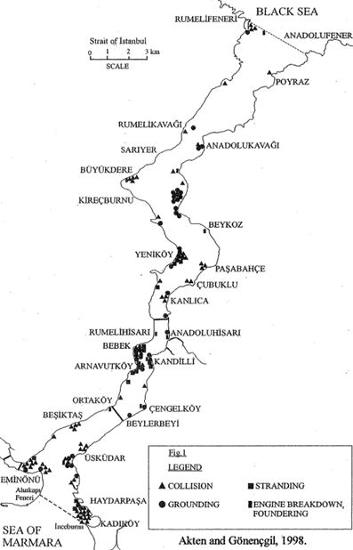
(실제로 보스포러스 해협에서는 충돌, 좌초 등의 선박 사고들이 생각보다 자주 발생.)
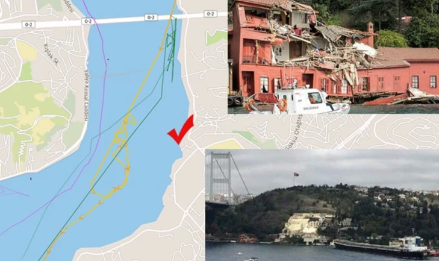
(보스포러스 해협은 좁고 구불구불하여 매우 조심하지 않으면 거대한 선박들은 해안을 들이받기 쉽다고.)
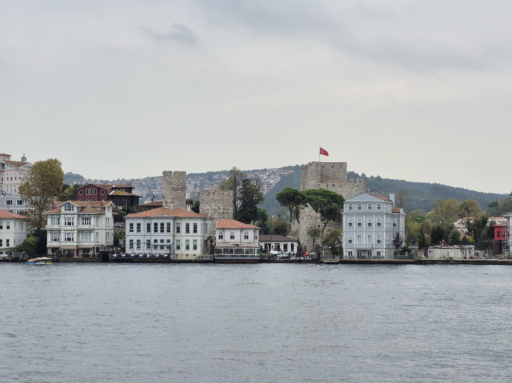 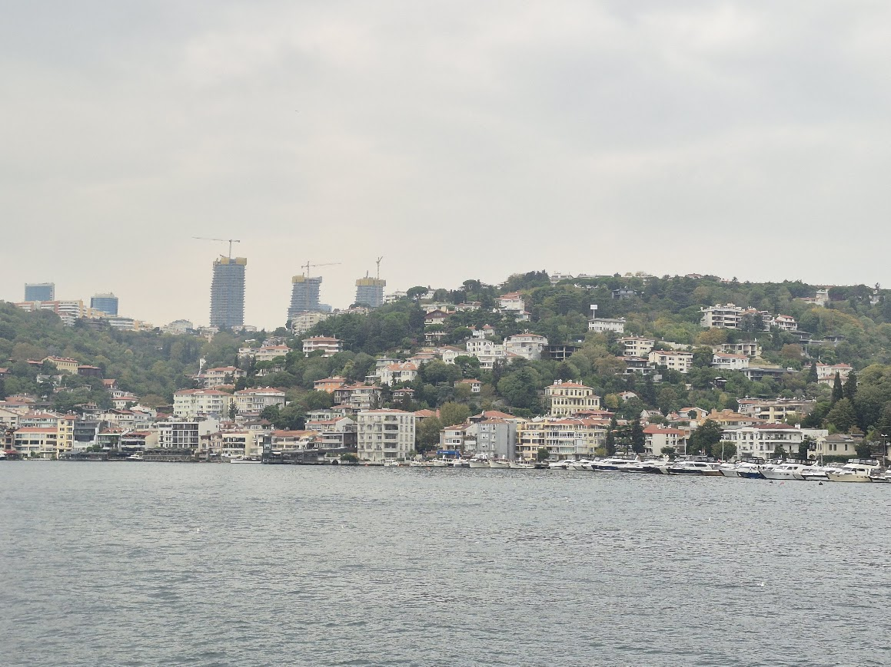 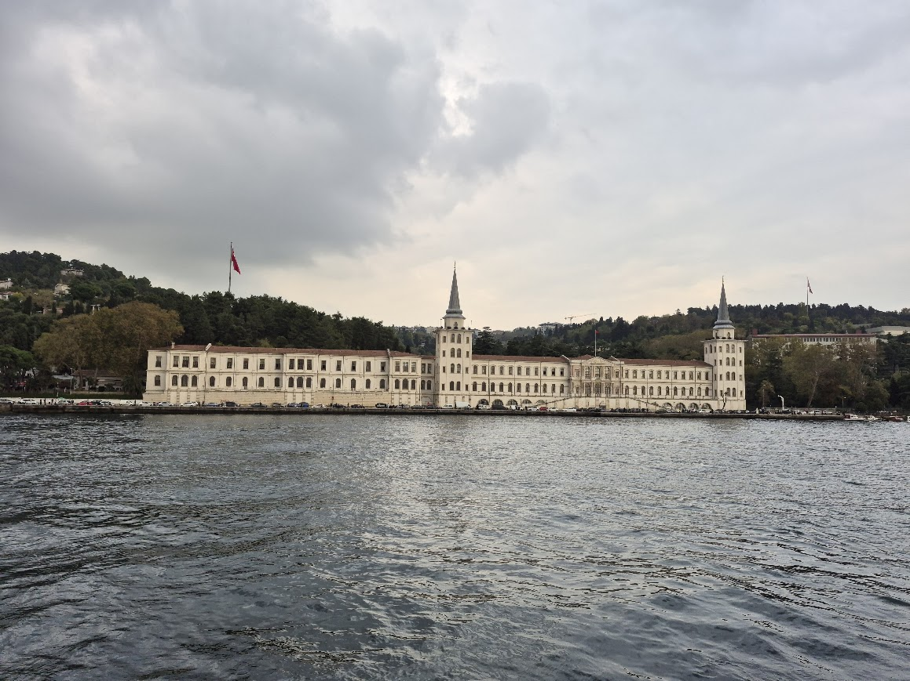
(그리고 해안가에는 고급 주택은 물론 왕궁과 유서 깊은 역사적 건물이 꽤 많이 있음.)
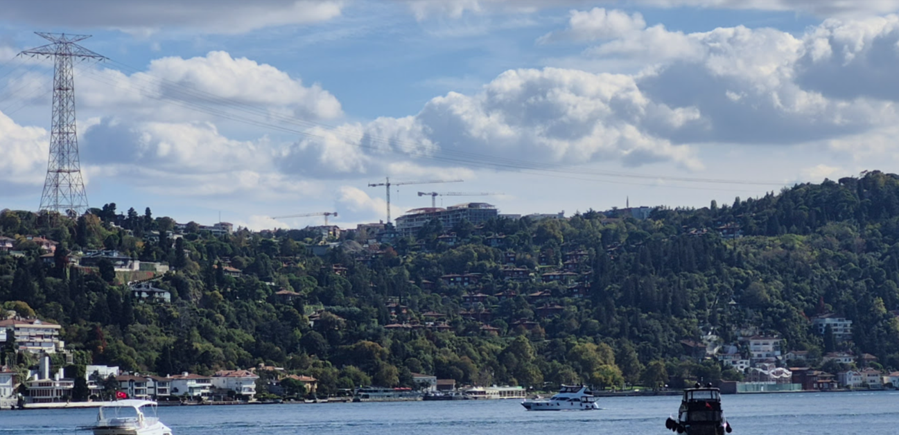
(보스포러스 해협을 가로지르는 송전선도 있음. 이 사진 속 거대한 송전탑은 아시아에 있는 발전소에서 만든 전기를 이스탄불로 보내는 송전선. 이런 송전선 선로가 총 3개 있는데, 송전탑은 수면 위 높은 곳에 있지만 약 1.7km 떨어진 '대륙간' 송전탑 사이에 늘어지는 저 송전선은 필연적으로 축 늘어지게 구성되었음. 저 송전선의 최저점은 수면 위 약 70m 정도.)

(게다가 보스포러스 해협에는 사진 속 파티흐 술탄 메흐메트 다리를 비롯한 대형 교량이 이미 2개나 놓여 있었음. 저런 다리들의 상판 높이는 수면 위 64m 정도로서, 해협을 이미 빠져나갔던 쿠즈네초프도 아직 안테나 등을 완전히 다 갖추고 있지 않았기 때문에 간신히 빠져나갈 수 있었음. 완성된 쿠즈네초프의 안테나를 포함한 최대 높이는 64m 정도, 그리고 그보다 더 큰 미해군 수퍼캐리어인 USS Gerald R. Ford의 경우 안테나까지 합하면 약 76m 정도.) 이 거부는 홍콩 사업가 수준에서 해결될 수 있는 스케일이 아니었음. 중국은 온갖 외교적 노력을 동원하여 이 문제를 해결하려 노력했으나, NATO의 부추김을 받은 튀르키예는 이런저런 핑계를 대며 계속 통과를 거부. 홍콩 사업가는 튀르키예 정부의 통과 불허로 인해 1억 달러가 넘는 금융 손실을 입었다고 아우성을 쳤음. 결국 중국은 튀르키예에게 각종 투자 약속과 함께 200만 명의 관광객을 보내주겠다고 약속하며 2001년 마침내 통과 허가를 받아냄. (그러나 실제 2002년 튀르키예를 방문한 중국 관광객은 31,995명에 불과했다고...) 그러나 원래 마카우까지의 예인 작업에 60일 정도 걸릴 거라고 생각했던 것은 큰 착각이었음. 이집트도 튀르키예와 같은 이유로 수에즈 운하 통과를 거부했던 것. 중국은 이집트에도 200만 관광객을 약속했으나 통하지 않았음. 실제로 수에즈 운하는 훨씬 더 좁았고, 훗날의 일이지만 20만톤짜리 화물선 Ever Given이 수에즈 운하를 6일간 먹통으로 만든 사고가 실제로 발생했으니 이집트가 거부할 만도 했음. 위에서 언급한 키에프도 예인선에 끌려오긴 했지만 러시아 북서부 무르만스크에서 출발했기에 굳이 수에즈 운하를 통과하지 않고 대서양과 희망봉, 인도양을 거쳐 중국으로 갔음.
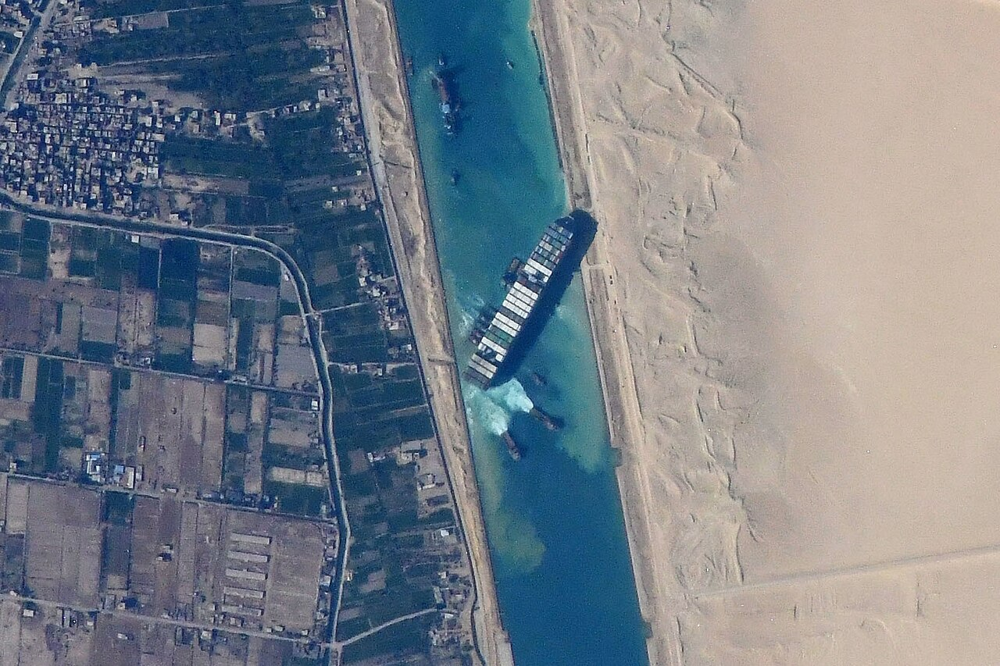
(2021년 이 사건을 다들 생생히 기억하실 것.)
결국 바랴그도 보스포러스 해협 - 마르마라해 - 다다날즈 해협 - 에게해 - 지중해 - 지브롤터 해협 - 대서양 - 희망봉 - 인도양 - 남중국해를 거치는 대여정을 거쳤음. 원래 지중해는 11월부터는 날씨가 거칠어지고 폭풍이 자주 불어서, 고대 그리스 등에서도 아예 출항을 하지 않는 법인데, 중국인들은 지중해를 우습겨 여겨서 그랬는지 2001년 11월 1일에 해협을 통과하여 지중해로 나감. 결국 폭풍을 만났고 많은 어려움과 사고를 겪었으며, 그 와중에 (외국인이긴 했지만) 선원 1명이 목숨을 잃기도 했음. 결국 바랴그가 천신만고 끝에 요녕성 대련항에 도착한 것은 출항한지 627일 만의 일. 예인 비용은 거의 1천만 달러에 달했다고.
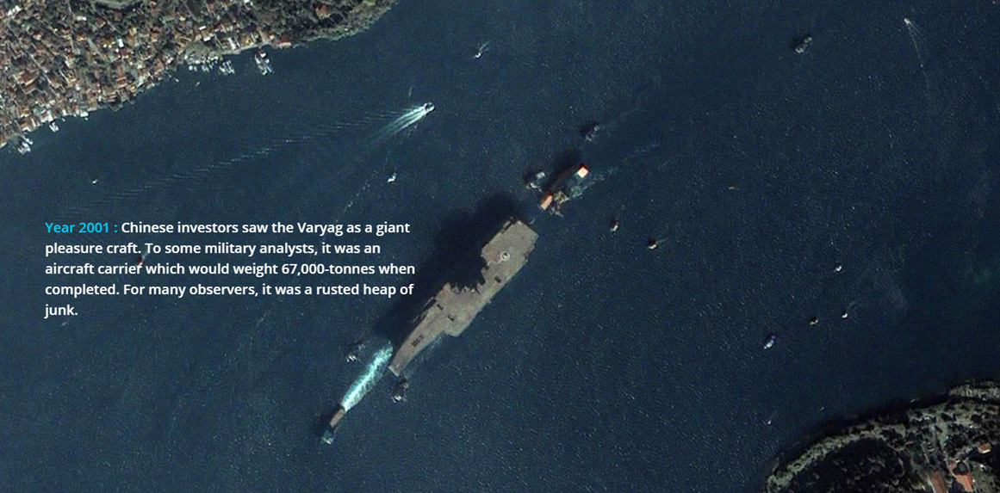 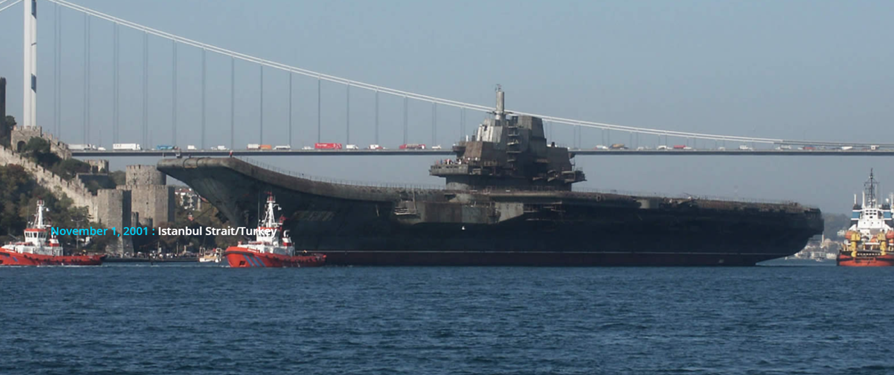
(2001년 11월 해협을 통과하는 바랴그)
이런 과정을 거쳐 중국에 도입된 바랴그는 10년이 넘는 개조를 거쳐 결국 2012년 중국 해군 최초의 항모 랴오닝으로 재탄생.
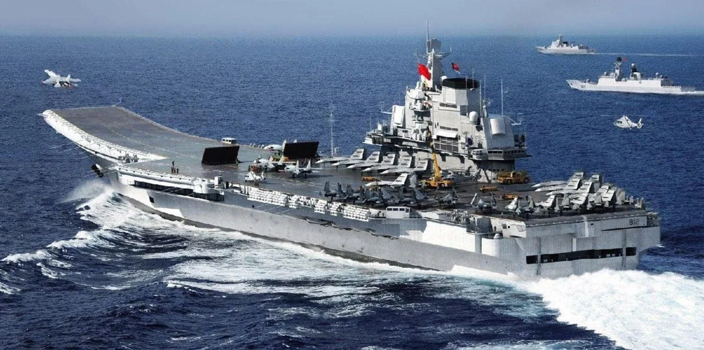
(중국 해군은 랴오닝을 2012년 취역시킬 때 '훈련함'으로 분류. 그러다 2019년에 비로소 전력화 완료를 선언. 항모의 운용은 그렇게 어렵고 복잡한 것.)
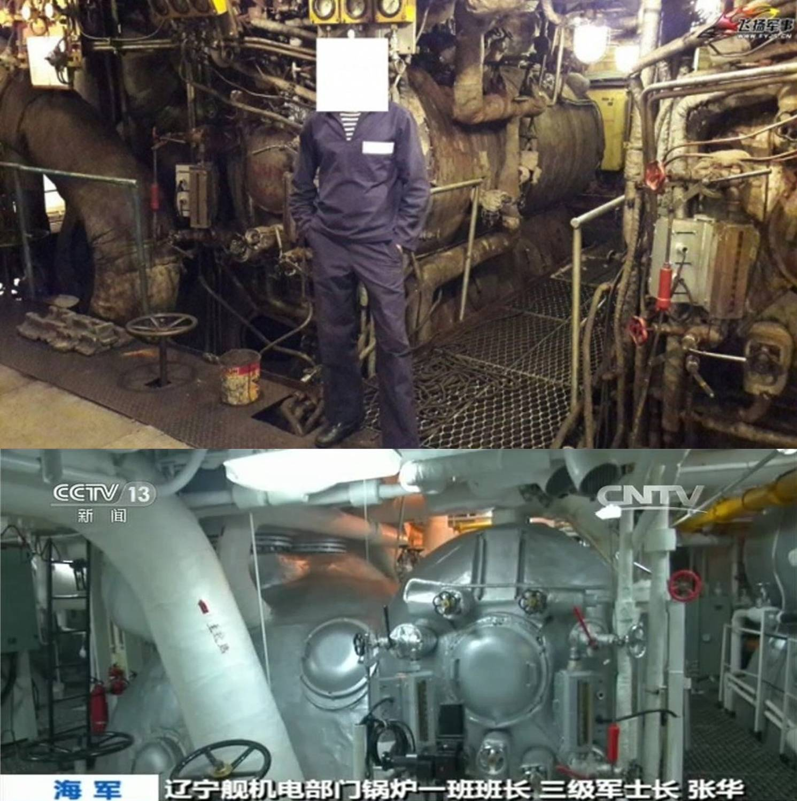
(랴오닝에 대해 '구소련 시절 폐선을 주워다 땜빵으로 만든 허접한 항모'라고 비웃는 경우가 많지만, 사실 오리지널인 쿠즈네초프에 비해 매우 개선된 기술이 적용되어 중국의 기술력을 과시하는 계기가 됨. 위는 쿠즈네초프의 엔진룸과 랴오닝의 엔진룸을 비교하는 사진.)